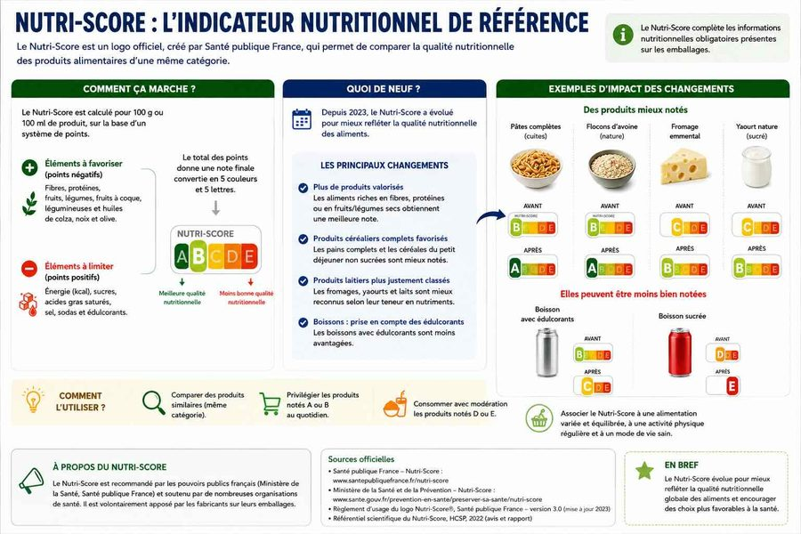
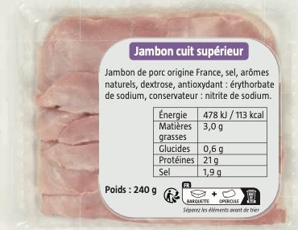

Cours standard adapté : mêmes objectifs que le programme CAP, textes courts, questions guidées, indices, corrigés, explications concrètes et audio sur les blocs.
3 séancesAudio sur les blocsRéponses guidéesExemples concrets
Mode d’emploi accessible
Lire dans l’ordre. Chaque document est suivi de ses questions. Les images aident à comprendre, mais le texte suffit pour répondre.
Utiliser les aides. Ouvrir l’indice pour démarrer, le corrigé pour vérifier, puis l’explication pour comprendre avec un exemple concret.
Séance 1 — Besoins nutritionnels
Objectif. Repérer les besoins énergétiques et fonctionnels selon l’activité et l’état de la personne.
Compétences :C1
Traiter l’information : repérer une information utile dans un document.
C2
Analyser une situation : comprendre le problème, les personnes concernées et les causes possibles.
C3
Mettre en relation : faire le lien entre une information du document et une connaissance du cours.
Situation — Amina commence tôt
Amina, 16 ans, commence son stage tôt. Elle saute souvent le petit-déjeuner. Vers 10 h, elle ressent un coup de fatigue. Le midi, elle mange rapidement un menu très gras et très sucré. Elle veut comprendre comment mieux adapter ses repas à sa journée.
1. À partir du document 1,
1.1C2Identifier le problème principal d’Amina.
Indice
Chercher ce qui se passe avant le coup de fatigue.
Corrigé
Elle adapte mal son alimentation à sa journée.
Explication
Exemple : sauter le petit-déjeuner puis manger très gras et sucré peut provoquer une fatigue et une baisse de concentration.
1.2C2Relever deux erreurs alimentaires dans la situation.
Indice
Chercher ce qui manque ou ce qui est en excès dans ses repas.
Corrigé
Elle saute le petit-déjeuner ; elle mange un repas très gras et très sucré.
Explication
Exemple : sans petit-déjeuner, Amina peut manquer d’énergie en milieu de matinée ; un repas trop gras peut aussi ralentir la digestion.
Document 1 — Besoins du corps
Besoins énergétiques
Ils fournissent l’énergie pour bouger, travailler, réfléchir et maintenir la température du corps.
Besoins fonctionnels
Ils aident le corps à fonctionner : eau, vitamines, minéraux, fibres.
Facteurs de variation
Âge, sexe, activité physique, état de santé, grossesse, métier.
2. À partir du document 2,
2.1C1Associer chaque besoin à son rôle.
Besoin
Rôle
Énergétique
Fonctionnel
Indice
Repérer le mot énergie et les mots vitamines, minéraux, fibres.
Corrigé
Énergétique : fournir de l’énergie. Fonctionnel : aider avec vitamines, minéraux, eau et fibres.
Explication
Exemple : les féculents apportent de l’énergie ; les fruits et légumes apportent notamment fibres et vitamines.
2.2C3Expliquer pourquoi les besoins varient selon le métier.
Indice
Comparer un métier assis et un métier physique.
Corrigé
Les besoins varient car l’activité physique n’est pas la même selon le métier. Exemple : un maçon dépense plus d’énergie qu’une personne assise toute la journée.
Explication
Exemple : un apprenti qui porte des charges peut avoir besoin d’un repas plus énergétique qu’un élève qui reste assis en classe.
Je retiens. Les besoins nutritionnels varient selon l’âge, le sexe, l’activité physique, l’état physiologique et le métier. Le corps a besoin d’énergie, d’eau, de fibres, de vitamines et de minéraux.
Séance 2 — Équilibre alimentaire
Objectif. Indiquer les principes d’une alimentation équilibrée : groupes alimentaires, composition d’un repas et rythme alimentaire.
Compétences :C1
Traiter l’information : repérer une information utile dans un document.
C3
Mettre en relation : faire le lien entre une information du document et une connaissance du cours.
C4
Proposer une solution : choisir une action adaptée à une situation.
Document 2 — Composer un repas équilibré
Un repas équilibré peut associer des légumes, des féculents, une source de protéines, un produit laitier ou équivalent, un fruit et de l’eau. Les produits très sucrés, très gras ou très salés sont à limiter.
Légumes et fruits
Fibres, vitamines, minéraux.
Féculents
Énergie progressive.
Viande, poisson, œuf ou légumineuse
Protéines pour construire et réparer.
Eau
Hydratation.
1. À partir du document 3,
1.1C1Relever quatre éléments d’un repas équilibré.
Indice
Choisir des groupes alimentaires différents.
Corrigé
Légumes, féculents, source de protéines, fruit, eau.
Explication
Exemple : une assiette avec haricots verts, riz, poulet, fruit et eau est plus équilibrée qu’un soda avec des frites seules.
1.2C3Associer chaque groupe alimentaire à son rôle.
Groupe
Rôle
Féculents
Fruits et légumes
VPO ou légumineuses
Indice
Repérer les mots énergie, vitamines et protéines dans le document.
Corrigé
Féculents : énergie. Fruits et légumes : fibres et vitamines. VPO ou légumineuses : protéines.
Explication
Exemple : des pâtes apportent surtout de l’énergie ; des lentilles apportent aussi des protéines végétales.
Document 3 — Lire une étiquette et le Nutri-Score

Le Nutri-Score aide à comparer des produits de même famille.
L’étiquette d’un aliment donne des informations sur l’énergie, les matières grasses, les sucres, le sel et parfois les fibres. Le Nutri-Score aide à comparer la qualité nutritionnelle de produits de même catégorie.
Il ne remplace pas un repas équilibré, mais il aide à choisir entre deux produits proches.
2. À partir du document 4,
2.1C1Relever trois informations présentes sur une étiquette.
Indice
Chercher les éléments chiffrés liés à la composition du produit.
Corrigé
Énergie, sucres, matières grasses, sel, fibres.
Explication
Exemple : comparer deux céréales peut montrer que l’une contient beaucoup plus de sucre que l’autre.
2.2C5Argumenter l’intérêt du Nutri-Score.
Indice
Penser à la comparaison entre deux produits.
Corrigé
Le Nutri-Score est utile, car il aide à comparer rapidement des produits de même famille.
Explication
Exemple : au supermarché, Amina peut comparer deux plats préparés et choisir celui qui a un meilleur Nutri-Score, tout en vérifiant le sel et les sucres.
Je retiens. Un repas équilibré associe plusieurs groupes alimentaires. Il apporte de l’énergie, des protéines, des fibres, de l’eau, des vitamines et des minéraux.
Séance 3 — Corriger les erreurs et adapter aux contraintes professionnelles
Objectif. Identifier les erreurs alimentaires, proposer des améliorations et effectuer un choix alimentaire raisonné.
Compétences :C1
Traiter l’information : repérer une information utile dans un document.
C3
Mettre en relation : faire le lien entre une information du document et une connaissance du cours.
C4
Proposer une solution : choisir une action adaptée à une situation.
C5
Argumenter : donner une idée et l’appuyer avec une raison.
Document 4 — Erreurs fréquentes et conséquences
Repas sauté
Coup de fatigue, grignotage, baisse de concentration.
Excès
Trop gras, trop sucré ou trop salé : risque de prise de poids ou de problèmes de santé.
Carence
Manque de fibres, vitamines ou minéraux : fatigue, constipation, fragilité.
Grignotage
Apports désorganisés, souvent riches en sucre ou en gras.
1. À partir du document 5,
1.1C1Classer trois erreurs alimentaires.
Erreur
Conséquence possible
Repas sauté
Excès de sucre
Manque de fruits et légumes
Indice
Relier chaque erreur à un effet sur l’énergie, la digestion ou la santé.
Corrigé
Repas sauté : coup de fatigue. Excès de sucre : prise de poids ou fatigue. Manque de fruits et légumes : manque de fibres et vitamines.
Explication
Exemple : une boulangère qui mange seulement des gâteaux le matin peut manquer de fibres et ressentir une fatigue durable.
1.2C4Proposer deux améliorations pour Amina.
Indice
Choisir une action pour le matin et une action pour le repas du midi.
Corrigé
Prévoir un petit-déjeuner simple ; ajouter un fruit ; choisir un repas avec légumes, féculents et protéines ; boire de l’eau.
Explication
Exemple : Amina peut emporter un yaourt, un fruit et du pain complet pour éviter le gros coup de fatigue de 10 h.
Document 5 — Adapter le repas au métier

Lire l’étiquette aide à choisir un produit adapté.
Les contraintes professionnelles influencent les choix alimentaires : heure de prise de poste, durée de pause, accès à un réfrigérateur, activité physique, travail de nuit.
Un choix alimentaire raisonné tient compte des besoins du corps et des contraintes du travail. Il évite les repas trop lourds avant un effort et limite les produits trop sucrés ou trop salés.
2. À partir du document 6,
2.1C4Choisir un repas adapté pour une pause courte et physique.
Indice
Chercher un repas transportable, digeste et assez énergétique.
Corrigé
Exemple : sandwich complet avec crudités et poulet, fruit, eau. Il est transportable et apporte énergie, protéines et fibres.
Explication
Exemple : pour un maçon avec 30 minutes de pause, un repas trop gras peut gêner la reprise du travail ; un repas complet mais digeste est plus adapté.
2.2C5Argumenter l’intérêt d’adapter son alimentation à son activité.
Indice
Relier alimentation, énergie et sécurité au travail.
Corrigé
Adapter son alimentation est important, car le corps a besoin d’énergie et de nutriments pour travailler sans fatigue excessive.
Explication
Exemple : une personne qui travaille debout toute la matinée doit éviter de sauter le petit-déjeuner pour garder de l’énergie et rester vigilante.
Je retiens. Les erreurs fréquentes sont le grignotage, les excès de sucre, de gras ou de sel, les carences et les repas sautés. Le choix alimentaire doit tenir compte du métier, des horaires et du temps de pause.
Bilan final — Je vérifie mes connaissances
Lexique
Besoin énergétique Quantité d’énergie nécessaire au corps.
Besoin fonctionnel Besoin lié au bon fonctionnement du corps : vitamines, minéraux, eau, fibres.
Nutriment Élément utilisable par le corps après digestion.
Groupe alimentaire Famille d’aliments ayant des rôles proches.
Grignotage Prise alimentaire répétée en dehors des repas.
Nutri-Score Repère visuel qui aide à comparer la qualité nutritionnelle de produits.